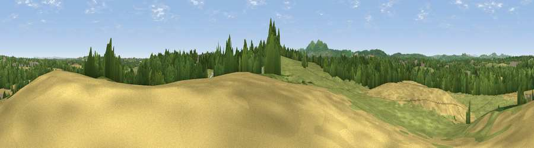

Viewpoint near Bransford
#31548 in England · top 78% of its area beats it · near BransfordThe view, rendered

A 360° render of this exact spot computed from the terrain model, tree cover and land cover — summer colours, afternoon light, calibrated against photographs of famous viewpoints. Real trees, hedges and buildings will differ in detail.
The panorama
Grey silhouette: terrain skyline in each direction (720 bearings, Earth curvature and refraction included). Dashed green: skyline with trees (+15 m) and buildings (+8 m) as obstacles. Blue strip: how far the ground is visible on each bearing.
Where the view opens
Wedge length = distance to the farthest visible ground on that bearing (vegetation-aware). Rings at 10, 25 and 50 km.
What fills the view
38% grassland · 32% cropland · 25% woodland · 3% built-up · 1% water
Angular shares of the visible panorama (visual magnitude), not map area. Landscape diversity 0.54 (0–1 Shannon).
Key numbers
More beautiful places nearby
The staircase of upgrades: each row has a higher view potential than everything closer. Driving times are estimates from straight-line distance, calibrated against real road routing — check an actual route before setting out.
| Place | Direction | Drive | Score |
|---|---|---|---|
| Viewpoint near Colletts Green | S · 1 km | ~2 min | 58.0 |
| Viewpoint near Storridge | WSW · 6 km | ~13 min | 70.5 |
| Viewpoint near Storridge | WSW · 6 km | ~13 min | 73.5 |
| Viewpoint near West Malvern | SW · 7 km | ~14 min | 81.4 |
| North Hill | SW · 7 km | ~15 min | 86.8 |
| Worcestershire Beacon | SSW · 8 km | ~17 min | 87.1 |
| Viewpoint near West Quantoxhead | SSW · 129 km | ~153 min | 87.9 |
| Viewpoint near West Quantoxhead | SSW · 130 km | ~154 min | 88.7 |
52.16886, -2.27812 · source: screening · position refined by local search. Computed location — check access rights before visiting.